17 Tujuan SDGs
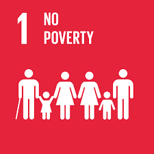
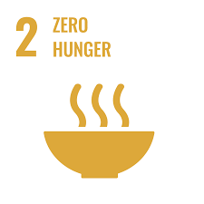

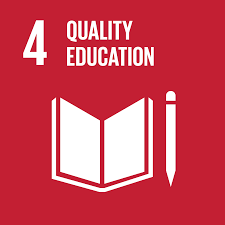
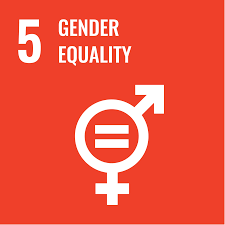
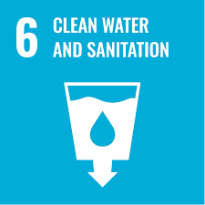
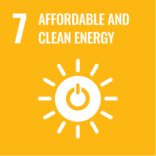
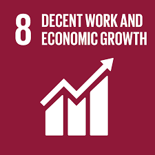

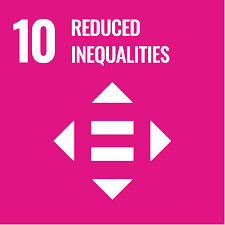
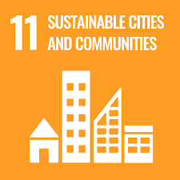
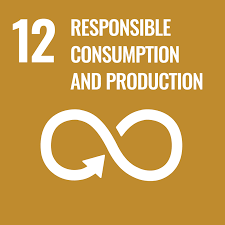
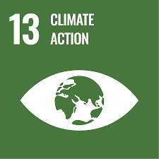

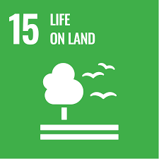
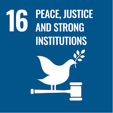
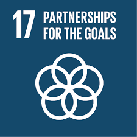
SDGs adalah 17 tujuan global dari PBB untuk menciptakan dunia yang lebih baik, mencakup aspek sosial, ekonomi, dan lingkungan hingga tahun 2030.














SDG 6 bertujuan untuk memastikan ketersediaan air bersih dan sanitasi yang layak bagi seluruh masyarakat.
United Nations. (n.d.). The 17 Goals. https://sdgs.un.org/goals
United Nations. (n.d.). Sustainable Development Goals. https://www.un.org/sustainabledevelopment/